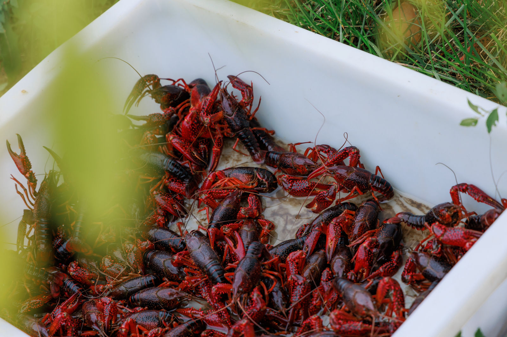

校企共建寒地小龙虾研发中心,技术成果优先落地转化。
繁育、养殖、加工全链条技术输出,保障原料品质与产品壁垒。
"高校科研 + 寒地生态"双重背书,构筑品牌护城河。
从供苗到回收,让养殖户专心养好虾,其余交给我们。
高校育种技术与养殖标准输出,提升产量与成活率。
共建寒地稻虾种养基地,统一种苗、统一标准。
保底价 + 市场价机制,订单式收购,养殖不愁卖。
分拣、加工、品牌化增值,产业链利润与农户共享。

虾以稻田虫草为食,粪便肥田;稻以虾粪为肥,绿色无污染——虾稻共生, 生态与经济双赢,是"冰泉养·鲜弹甜"的源头密码。
少施药、少用肥,产出更洁净的小龙虾与更健康的稻米。
冰泉引灌 + 定期检测,从源头保障"鳃净腹白"。
寒地生长周期长,7—9 月大虾集中上市,抢占空窗市场。
养殖基地 / 合作社提交意向,沟通规模、水质与基础条件。
技术团队实地考察,评估水源、土壤与稻田条件,出具养殖方案。
签订技术合作与原料订购协议,统一供苗、统一标准。
驻场技术员 + 定期巡检,覆盖养殖全周期的技术支持。
成熟大虾订单式回收,分拣加工,养殖户专注养好虾即可。
深加工与品牌溢价反哺基地,共建可持续增收生态。
虾稻双收 + 订单回收,养殖户亩均增收超 600 元。
叠加深加工溢价,全产业链利润率较传统模式提升 30% 以上。
呼应黑龙江打造"中国寒地小龙虾之都"、2025 年养殖 10 万亩的产业规划。